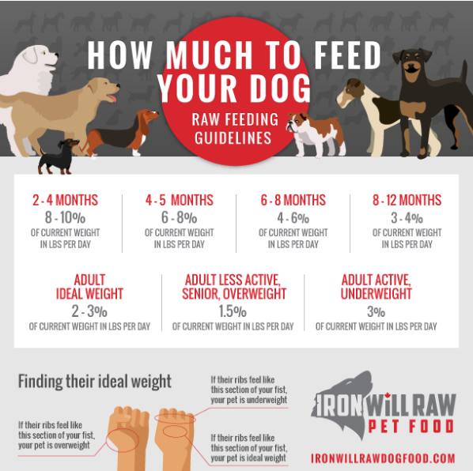
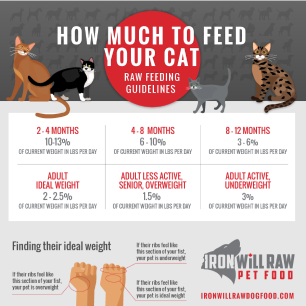

If you don't know how much to feed your pet, you can use image as a guide for dogs and for cats. Note that this is just an estimate. Only you can know how much to feed your pet. If they have a health condition consult your vet. If they are overweight feed less, if they are underweight feed more. Pregnant or nursing females will need 2-3 times more food than they normally would. Puppies' and kittens' needs change every month.


SOME WEBSITES
Dr Karen Becker - The Most Followed Veterinerian in the World
Dr. Billinghurst is considered one of the world’s leading experts on the subject.This book is the first popular book to promote the idea of feeding dogs raw food and meaty bones.
Raw Dog Food Make it Easy For You and Your Dog by Carina Beth MacDonald
This book covers all the basics that a beginning raw feeder needs to know: what bony parts to feed, other foods to include in the diet, preparation, and how much to feed. Also talks about customizing the diet based on age and size, problem solving, and answers to common questions.
Dr Becker's Real Food for Healthy Dogs and Cats by Dr Karen Becker - Beth Taylor
Based on the ancestral diets of dogs and cats, this book provides a rotation plan and recipes for a meat-based diet that includes appropriate levels of vegetables, fruits and supplements to complete the diet, analyzed to make sure that nutrition needs are met.